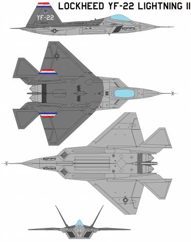

Development
The F-22 Raptor, a marvel of aerospace engineering, stands as a testament to American air superiority. Its journey began in 1981 with the U.S. Air Force's Advanced Tactical Fighter (ATF) program, aiming to replace the aging F-15 Eagle and F-16 Fighting Falcon against emerging Soviet threats. Lockheed Martin's design, the YF-22, won the competition in April 1991, leading to the development of what would become the world's first fifth-generation stealth fighter.
Development of the F-22 was a complex undertaking, pushing the boundaries of stealth technology, advanced avionics, and super-cruise capability (sustained supersonic flight without afterburners). The first F-22 Raptor test aircraft took flight in 1997, and after rigorous testing, the program received full-rate production approval in 2005. Initial operational capability was achieved in December 2005, with the first combat-capable Raptors delivered to the 27th Fighter Squadron at Langley Air Force Base, Virginia.
Deployment
The F-22's deployment has been strategic and impactful. It quickly proved its dominance in exercises, achieving impressive "kill ratios" against simulated adversaries. While primarily designed for air-to-air combat, its multi-role capabilities, including ground attack and electronic warfare, were utilized in combat operations in the Middle East, notably against the Islamic State in Syria from 2014. The Raptor also frequently intercepts Russian aircraft near U.S. airspace, particularly around Alaska. In a notable event, an F-22 achieved the type's first air-to-air kill in February 2023, by shooting down a Chinese spy balloon off the coast of South Carolina.
Today
Today, the F-22 remains a cornerstone of U.S. air power, despite production ending in 2011 with 195 aircraft built. Its highly classified technology prevents its export, maintaining its exclusivity to the U.S. Air Force. The fleet undergoes continuous modernization through programs that integrate new avionics, radar systems, and countermeasures. Efforts are underway to enhance its connectivity with other platforms, supporting the Air Force's Joint All-Domain Operations strategy. While the U.S. is developing the Next Generation Air Dominance (NGAD) fighter as its eventual successor, the F-22 Raptor continues to be a formidable and essential asset, ensuring air superiority for the foreseeable future.